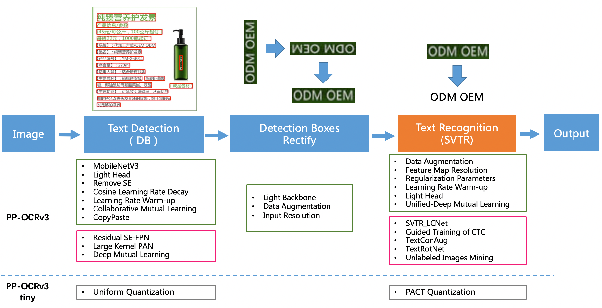
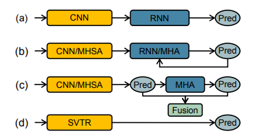
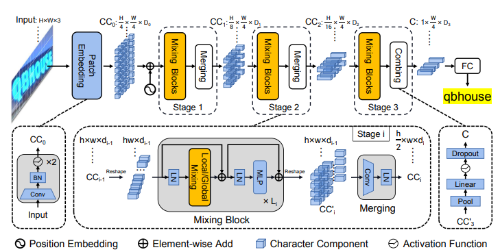
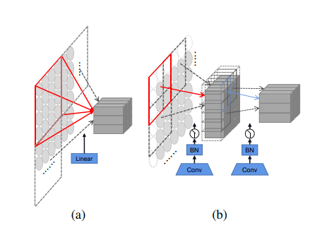
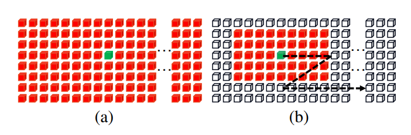
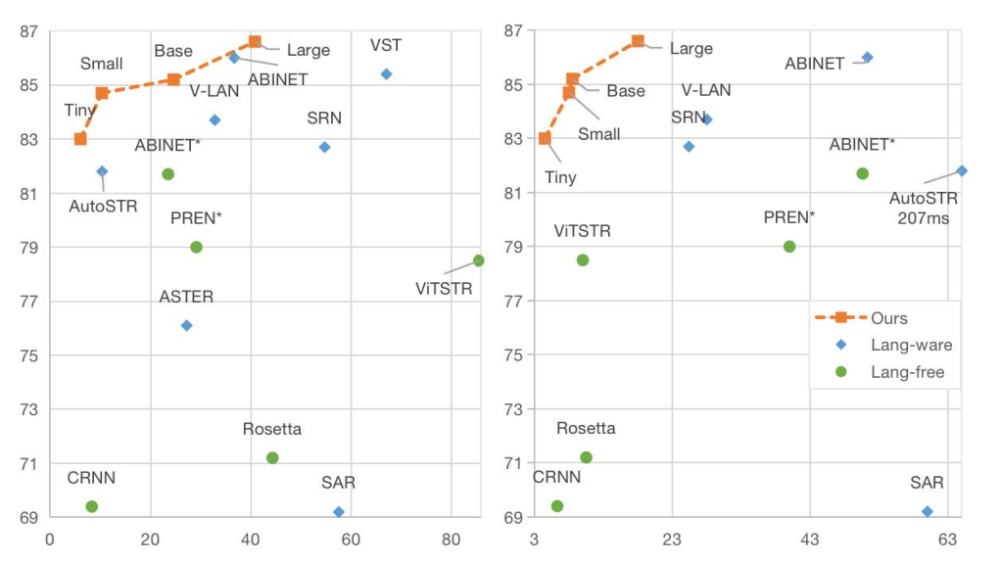
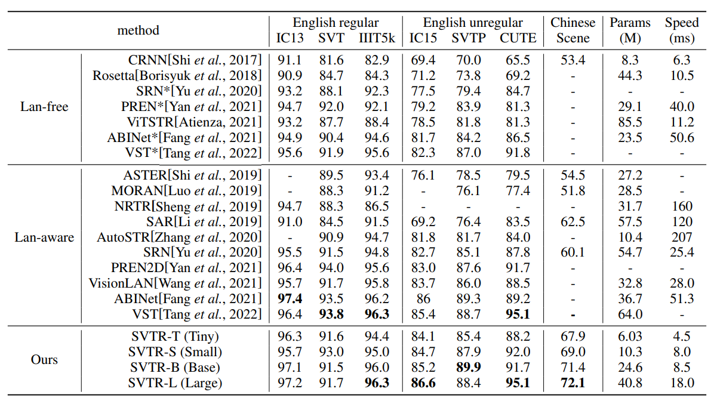

constiution: Baidu Inc., Fudan University, China
conference: IJCAI 2022
github: https://github.com/PaddlePaddle/PaddleOCR
reference: https://arxiv.org/pdf/2205.00159v2.pdf
PP-OCRv3
Introduction: PP-OCRv3, proposed by PaddleOCR team, is further upgraded on the basis of PP-OCRv2. The overall framework of PP-OCRv3 is same as that of PP-OCRv2. The base model of recognition network is replaced from CRNN to SVTR, which is recorded in IJCAI 2022.

There are 9 optimization strategies for text detection and recognition models in PP-OCRv3, which are as follows.
In terms of effect, when the speed is comparable, the accuracy of various scenes is greatly improved:
- In Chinese scenarios, PP-OCRv3 outperforms PP-OCRv2 by more than 5%.
- In English scenarios, PP-OCRv3 outperforms PP-OCRv2 by more than 11%.
- In multi-language scenarios, models for more than 80 languages are optimized, the average accuracy is increased by more than 5%.

Figure 1:
(a) CNN-RNN based models.
(b) Encoder-Decoder models. MHSA and MHA denote multi-head self-attention and multihead attention, respectively.
(c) Vision-Language models. (e.g. SRN, ABINet)
(d) Our SVTR, which recognizes scene text with a single visual model and enjoys efficient, accurate and cross-lingual versatile.

Figure 2: Overall architecture of the proposed SVTR. It is a three-stage height progressively decreased network. In each stage, a series of mixing blocks are carried out and followed by a merging or combining operation. At last, the recognition is conducted by a linear prediction.

Figure 3: (a) The linear projection in ViT [Dosovitskiy et al., 2021]. (b) Our progressive overlapping patch embedding.

Figure 4: Illustration of (a) global mixing and (b) local mixing.
Since two characters may differ slightly, text recognition heavily relies on features at character component level.
We argue that text recognition requires two kinds of features:
Therefore, we devise two mixing blocks to perceive the correlation by using self-attention with different reception fields.
The Effectiveness of Patch Embedding

Figure 5: Accuracy-parameter (M) and Accuracy-speed (ms) plots of different models on IC15.
Comparison with State-of-the-Art

Table 4: Results on six English and one Chinese benchmarks tested against existing methods, where CRNN and Rosetta are from the reproduction of CombBest [Baek et al., 2019]. Lan means language and * means the language-free version of the corresponding method. The speed is the inference time on one NVIDIA 1080Ti GPU averaged over 3000 English image text.